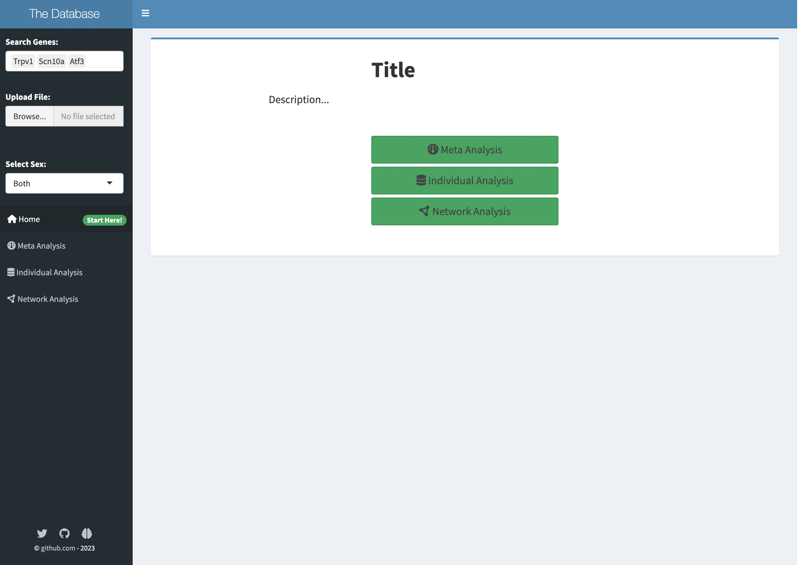

Chapter 3 User Interface
- Write descriptions for each dataset and save them in
.\des\DATASETNAME.Rhtml - Modify titles and descriptions
At the most basic level, no changes are needed here, although customization is recommended (eg. choose a title, add descriptions). Throughout this app, description files for each page are loaded in as .Rhtml or .Rmd files, which can be rendered in R.
# example descriptions
includeHTML("network.Rhtml")
includeMarkdown("userguide.Rmd")Details are below, and basic UI tutorials can be found at https://shiny.rstudio.com/tutorial/written-tutorial/lesson1/.
3.1 Basic structure
A Shiny dashboard UI typically consists of three main parts, contained within dashboardPage:
Dashboard header: This is the top part of the dashboard, which contains the logo or title of the dashboard, and any navigation menus or links.
Dashboard sidebar: This is the vertical bar on the left-hand side of the dashboard that contains input controls, such as buttons, sliders, dropdown menus, or text inputs. The sidebar allows users to interact with the dashboard and filter or manipulate the data displayed in the main panel.
Dashboard body/main panel: This is the main part of the dashboard, which displays the data or visualizations based on the input controls selected in the sidebar. The main panel can contain any type of output, such as plots, tables, or text, and can be updated dynamically based on user input.
Places commented in red texts are sites for customisation. Otherwise, this does not need to be modified
3.2 Header
shinydashboard::dashboardHeader(title= "The Database", ## Customise title
titleWidth = 225)3.4 Body
In the body, the tabItems with corresponding values for tabName:
### structure overview, each tab described below
dashboardBody(
tabItems(
# First tab content
tabItem(tabName = "tabhome",
# content
),
# Second tab content
tabItem(tabName = "tabmeta",
# content
),
# other tabs
)
)3.4.1 Homepage
The homepage displays the title and general description of the app, which can be customised by the user at places commented in red text.

shinydashboard::tabItem(tabName = "tabhome",
shinydashboard::box(
width = 12,
status = "primary",
column(width = 6, offset = 4,
## place for adding titles
h1(strong("Title"))), column(width = 8, offset = 2,
## place for customising descriptions
h4("ADD TEXT")
),
column(width = 4, offset = 4,
actionButton("metaa","Meta Analysis", class = "btn-success btn-lg btn-block", icon = icon("dashboard")),
actionButton("inda","Individual Analysis", class = "btn-success btn-lg btn-block", icon = icon("database")),
actionButton("neta","Network Analysis", class = "btn-success btn-lg btn-block", icon = icon("circle-nodes")),
br(),br()
)
)
)3.4.2 Grouped comparisons
Grouped comparisons contains integrative visualisation of multiple datasets. This page contains a table containing descriptions of each dataset, as well as integrative plots. Each item is contained within boxes, and their width can be adjusted by changing the width parameter.

There are three plots displayed in the example:
- Dot plot showing gene expression changes.
- Dot plot showing scRNA gene expression.
- Dot plot showing differential gene expression of genes.
shinydashboard::tabItem(tabName="tabmeta",
br(),
shiny::fluidRow(
shinydashboard::box(status = "primary",
width = 12,
title = "Choose Datasets for Meta-Analysis",
solidHeader = TRUE,
## description
p("ADD TEXT HERE"),
hr(),
# table containing information of datasets
DT::dataTableOutput("meta_table"),
collapsible = TRUE),
), br(),
# buttons
fluidRow(
column(12,offset = 0,
shiny::actionButton("load", "Plot Graphs", icon = icon("play-circle")),
shiny::downloadButton("combineplot", "Generate code"),
shiny::downloadButton("combineplots", "Download Plots")
)
), br(),
shiny::fluidRow(
# dot plots for bulk and single RNA sequencing
## comment out plots that you don't need
shinydashboard::box(width = 12,
title = "Naive",
collapsible = TRUE,
solidHeader = TRUE,
status = "primary",
plotcombine_ui("dot"),
plothomescdot_ui("homespat")
)
),
fluidRow(
# DEG plots
shinydashboard::box(width = 12,
title = "Differential Gene Analysis",
collapsible = TRUE,
solidHeader = TRUE,
status = "primary",
deg_combine_ui("deg_plot"))
)
)3.4.3 Individual Analysis
The information and plots for a dataset can be displayed after selection. Different from previous pages, this page contains a dynamic UI that reacts to the user input (i.e. the dataset that users clicked in the table). This is achieved by the uiOutput() function, which tells Shiny when the pages should be rendered. The UI for each indiviual page is stored in a function shinypageUI(), which is called with different parameters in response to different datasets selected.
### this doesn't need to be altered
shinydashboard::tabItem(tabName = "tabdata",
fluidRow(
# a table that allows selection of a single dataset for visualisation
shinydashboard::box(status = "primary",
solidHeader = TRUE,
width = 12,
title = "Choose A Dataset for Individual Analysis",
DT::dataTableOutput("dataset_table"),
helpText("Select one dataset for meta-analysis by clicking on rows. Click again to deselect a dataset."),
collapsible = TRUE)
), br(),
fluidRow(
# a ui that is responsive to dataset selected
uiOutput("shinypages")
)
)The components included in each dataset are shown below. The code for each component is shown after, but does not need to be altered, other than changing title for control and condition boxes.
The shinypageUI() function:
#' The UI function for each individual dataset page
#'
#' @param datasetTitle The title for the page
#' @param includedeg A Boolean value stating whether to include differential expression plots and tables
#' @param volc_title The title for volcano plots
#' @param include_subtype A Boolean value stating whether to include plots for different sub-populations.
#' @param des_dir A directory for the description files. Default = NULL.
#' @param image_dir A directory for any images. Default = NULL.
#' @param includegoi A Boolean stating whether to include result count table for selected genes.
shinypageUI <- function(id, datasetTitle, includedeg = FALSE, volc_title = NULL,
include_subtype = FALSE, des_dir = NULL, image_dir = NULL, includegoi = TRUE,
include_count = TRUE) {
shiny::fluidPage(
shiny::fluidRow(
# Description for dataset
shinydashboard::box(title = datasetTitle,
width = 12,
status = "primary",
solidHeader = TRUE,
if (is.null(des_dir) == FALSE) {includeHTML(des_dir)}, ## links description files
if (is.null(image_dir) == FALSE) {img(src = image_dir, height = 150, width = 400)}
)
),
br(),
# buttons
shiny::actionButton(NS(id, "load"), "Plot Graphs", icon = icon("play-circle")),
shiny::downloadButton(NS(id,"report"), "Generate Code"),
shiny::downloadButton(NS(id,"plots"), "Download Data"),
shiny::helpText(em("Load data before plotting.")),
# plots using count data
if (include_count == TRUE){
shiny::fluidRow(
# gene expression dotplot
shinydashboard::box(title = "Control", ## change title
status = "primary",
solidHeader = TRUE,
plotly::plotlyOutput(NS(id, "bulkseq_dots")),
height = "36em"
),
# line plot showing differential expression in different treatment groups
shinydashboard::box(title = "Condition", ## change title
status = "primary", solidHeader = TRUE,
shiny::plotOutput(NS(id, "bulkseq_lines")),
height = "36em"
), br(), br()
)
},
br(),
# plots for experiments which divide samples into different groups e.g. different cell subtypes
if (include_subtype == TRUE) {
# line plots showing differential gene expression in different experiment groups in response to treatment
shiny::fluidRow(
shinydashboard::box(width = 12,
title = "Subtype Results", status = "primary",
solidHeader = TRUE,
shiny::plotOutput(NS(id, "bulkseq_lines_subtype"))
)
)
},br(),
# plots using differential expression data
if (includedeg == TRUE) {
shiny::fluidRow(
shinydashboard::box(width = 6,
title = "Differential Gene Analysis",
status = "primary",
solidHeader = TRUE,
plotly::plotlyOutput(NS(id, "deg_plot")),
height = "38em"),
# volcano plots
shinydashboard::box(width = 6,
title = volc_title, status = "primary",
solidHeader = TRUE,
actionButton(NS(id, "plotvolc"), "Plot Volcano Graphs"),
selectInput(NS(id, "volc_pop"), "",
choices = NULL,
selected = ""),
shiny::plotOutput(NS(id, "volcanoplot"), height = "26em"), height = "38em"
)
)
},br(),
# for displaying count data for genes selected
if(includegoi == TRUE) {
shiny::fluidRow(
shinydashboard::box(
width = 12,
title = "Result Table",
status = "primary",
solidHeader = TRUE,
DT::dataTableOutput(NS(id,"goi_table"))
)
)
},br(),
# for displaying differential expression data
if(includedeg == TRUE) {
shiny::fluidRow(
shinydashboard::box(width = 12,
title = "Differential Analysis Table",
status = "primary",
solidHeader = TRUE,
selectInput(NS(id, "contrast"), "",
choices = NULL,
selected = ""),
DT::dataTableOutput(NS(id, "contrast_table"))
)
)
}
)
}
3.4.4 Network page
We also provide an option for basic network analyses. The network tab contains a description box, a gene search bar, a network, a result table containing differential expression values, and a table containing information for datasets from RNA-seq and microarray studies.
On the server-side, this network is generated from STRING DB and reconstructed with visNetwork. In this app, users can also colour/annotate the network based on experimental results.

# UI for the network page
shinydashboard::tabItem(tabName = "tabnet",
fluidRow(
shinydashboard::box(title = "Network Analysis", ## modify title as needed
width = 12,
status = "primary",
solidHeader = TRUE,
## insert description files
includeHTML("des/network.Rhtml")
)
),br(),
# gene search bar and filter bar
fluidRow(
column(width = 3,
selectizeInput(
inputId = "gene_symbols",
label = "Enter Query Gene Symbols:",
multiple = TRUE,
choices = NULL
)
),
column(width = 3,
selectInput("pop", "Select Experiment:",
## customize choices of datasets for different modes of annotation
choices = c("Pain Enrichment Score", unique(data$experiment_id)),
selected = "Diabetes") ## choose one of your datasets
),
column(width = 3,br(),
actionButton("submit", "Construct Network")), style = "margin-top:20px;"
),
# render network
fluidRow(
shinydashboard::box(width = 12, status = "primary",
solidHeader = TRUE, title = "Network",
column(width = 10,
visNetwork::visNetworkOutput("network", height = "435px")
), height = "38em",
# legends
column(width = 2,
uiOutput("netlegend")
)
),
), br(),
# result table
fluidRow(
shinydashboard::box(width = 12, status = "primary",
solidHeader = TRUE, title = "Result Table",
tabsetPanel(
tabPanel( "DEG Table",
DT::dataTableOutput("contrast_table")
),
tabPanel("Nodes",
DT::dataTableOutput("protein_table")
)
),
height = "38em"
)
),br(),
# a table containing descriptions of experiments involved, their methods and treatment groups
fluidRow(
shinydashboard::box(status = "primary",
solidHeader = TRUE,
width = 12,
title = "Datasets",
column(width = 12,
## Insert table html files
includeHTML("des/datatable.html")
),
collapsible = TRUE),
)
)